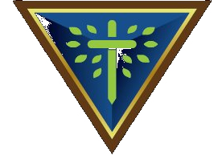

A walking game
Walk the farm as Teddy. Bring every sheep home. There’s no way to lose.
The flock is scattered across the farm tonight, friend — some by the well, some by the barn, some just out in the grass. Walk Teddy to a sheep and it will fall in behind him; lead the whole train home through the gate of the fold. Stop at each place on the farm — every one of them has one true thing to tell you.
Play it your way: a plugged-in game controller on the TV (stick or D-pad to walk, A to go on), the arrow keys or WASD, or the thumb stick on a touch screen. No timer, no enemies, no losing — take all the time you like.